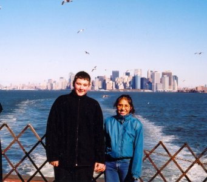
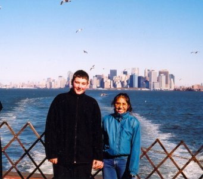

America - An Adventure with Daniel
7th November 2001. 4.00 pm. Gatwick to Philadelphia
We arrived early at Heathrow, terminal 4 and faced a long long queue of
people at the check-in. (Some time later Dan found out that you could check
yourself in and go straight through!). Eventually we were aboard the 8 hour
flight to Philadelphia. Strangely enough the time passed quite easily. I
suppose one is resigned to spending that amount of time with nothing better
to do than look at a map of the ocean sliding past beneath us, or watch a
video of how coins are made (in this instance).
On arrival at Philadelphia I was surprised to find a rather smaller than
expected airport building and no clear 'meeting area' Also, and more to the
point no sign of Aldo, Chrissy and Co. - However, some 45 minutes later
they materialised amongst a rush of excitement, hand shaking and kisses.
Then we were on our way.
First impressions were 'isn't everything big and solid' - That was the
bridge over the Hudson River. Like a four lane motorway in each direction
and well over a mile long. Then later some countryside beyond the freeway,
and finally Mount Laurel, or rather the Crossways Motel some 20 minutes up
the road from Mount Laurel. We were booked in and taken to our room and
left. Quite well appointed as you can see from the photograph.
|
Crossways Motel - Mount Laurel
|
  
|